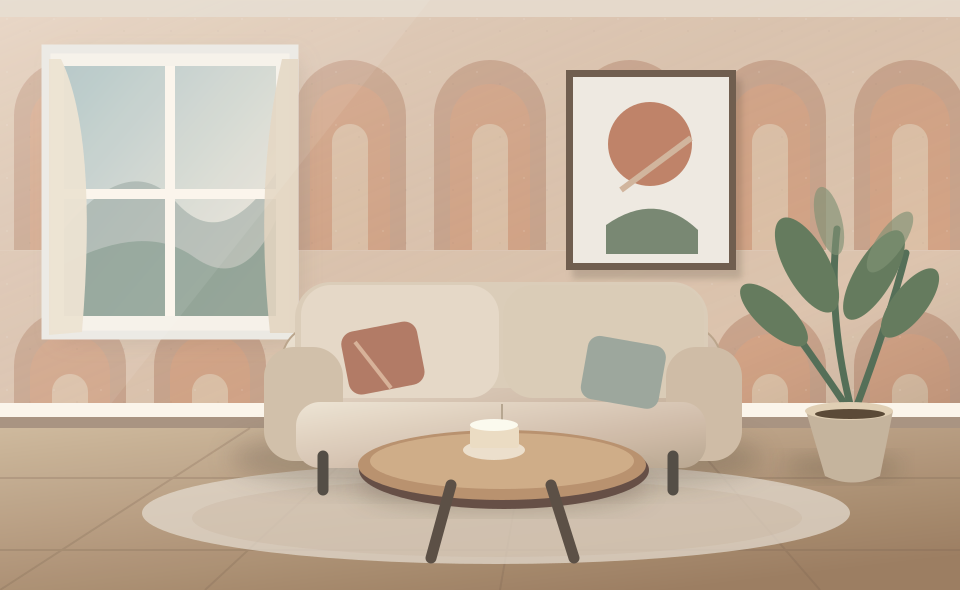
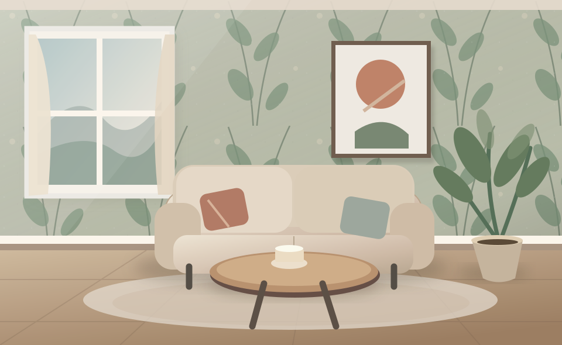
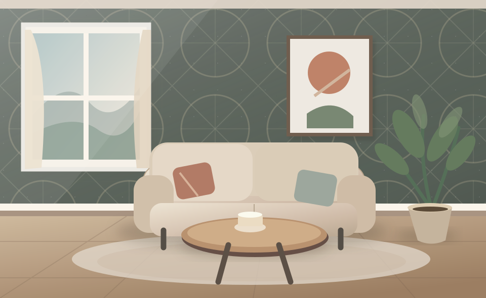
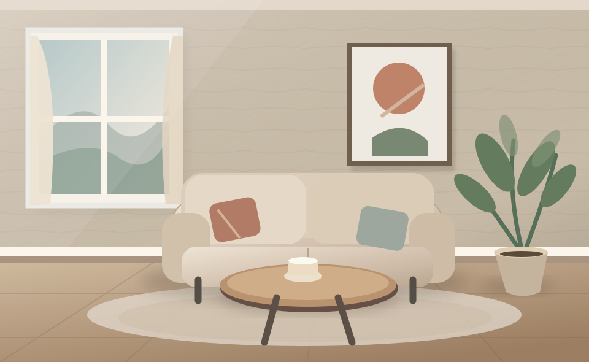
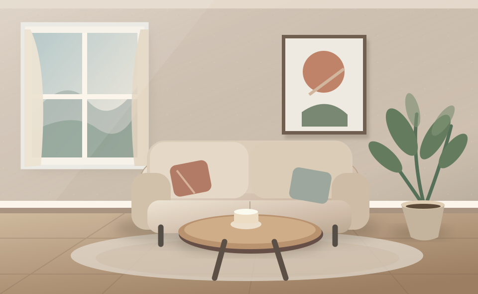
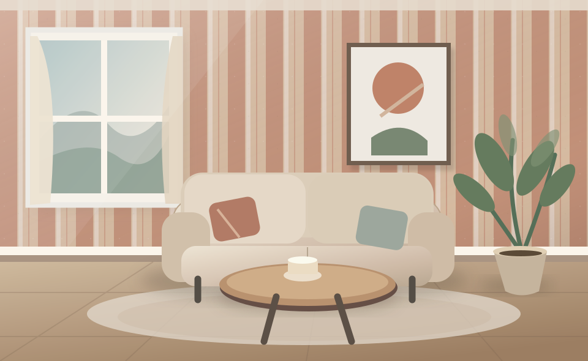

BEYOND
THE SCREEN.
อีก 15 การทดลองด้าน Motion, Interaction และ Immersive Web — ให้คุณทดลอง ลาก คลิก เลื่อน ขยับ และสำรวจ ด้วยตัวเอง
FIFTEEN MORE
WAYS TO FEEL.
เลือกหัวข้อเพื่อกระโดดไปทดลอง
ทุกการ์ดมีเดโมที่ใช้งานได้จริง
MATTER
IN MOTION.
Surfaces, magnetic behavior and reactive typography.
MAKE IT
FEEL FLUID.
ลากแผ่นกระจกใสไปบนพื้นผิวเพื่อทดลองการเบลอ การสะท้อน และความโปร่งแบบ Liquid Glass
& FLUID
01.DRAG ME ↗
ENTER THE
MAGNETIC FIELD.
เลื่อนเคอร์เซอร์เข้าใกล้ Bubble หรือแตะวงกลมบนมือถือ เพื่อให้วงกลมตอบสนองแบบสปริง
BEND THE
PIXELS.
ขยับเคอร์เซอร์บนภาพ WebGL เพื่อสร้างคลื่นบิดตัวแบบเรียลไทม์ หรือแตะภาพบนมือถือ
NO EDGES.
JUST IDEAS.
ลากสำรวจ Moodboard ได้อย่างอิสระ ใช้วงล้อเมาส์หรือปุ่มเพื่อซูมเข้าออก

01 / SCULPTURAL
02 / BOTANICAL
04 / NOCTURNEIS A
CANVAS.

06 / SOFT LINESTHE MESSAGE
EMERGES.
กดเปลี่ยนข้อความเพื่อดูตัวอักษรสุ่มก่อนคลี่คลายกลายเป็นข้อความใหม่
CODE IS THE NEW CANVAS.
MOTION HAS
CHARACTER.
Every movement should feel intentional.
DEPTH AT
YOUR FINGERTIPS.
ขยับเคอร์เซอร์บนการ์ดเพื่อเปลี่ยนมุมแสงและความลึก กดเปลี่ยนผิววัสดุได้
MATTERS.EDITION 021 — EXCLUSIVE
2026
SPEED
LEAVES A MARK.
เลื่อนหน้าขึ้นลงเร็ว ๆ แล้วสังเกตตัวหนังสือที่เร่ง ทิ้งแรงเฉื่อย และค่อย ๆ กลับสู่ปกติ
LEAVE A
LIVING TRACE.
ลากเมาส์หรือวาดด้วยนิ้วบนพื้นที่นี้ เพื่อให้ริบบิ้นของแสงเคลื่อนไหวตามแบบหน่วงเวลา
BEAUTIFUL.
FOLLOW
THE LINE.
เลื่อนสไลเดอร์เพื่อดูเส้นทางกราฟิกวาดขึ้นทีละส่วนเหมือนแผนผังการเดินทางของงานออกแบบ
LET TYPE
TAKE SHAPE.
เลื่อนเคอร์เซอร์ผ่านตัวอักษรเพื่อให้แต่ละตัวขยับ ยก และหมุนตามแรงที่อยู่ใกล้เคียง
BEYOND
THE FRAME.
New spaces to explore. New ways to interact.
CHANGE SCENES.
NOT FEELING.
คลิกเปลี่ยนหน้าในเบราว์เซอร์จำลอง เพื่อดูเอฟเฟกต์ Transition แบบ Full-bleed ต่อเนื่อง
FORM &
FEELING.
DESIGN IN MOTION ↗REVEAL WHAT
LIES BENEATH.
ลากเมาส์เพื่อเปิดเผยดีไซน์ที่ซ่อนอยู่ เลื่อนสไลเดอร์ปรับขนาดหน้ากาก หรือแตะบนมือถือ

A UNIVERSE
THAT REACTS.
ขยับหรือกดบนพื้นที่อนุภาคเพื่อผลักหรือดึงอนุภาคและสร้างคลื่นการเคลื่อนไหว
STEP INTO
THE GALLERY.
ลากสไลด์ภาพหรือกดลูกศรเพื่อเดินทางในแกลเลอรีสามมิติที่แต่ละภาพมีตำแหน่งความลึกต่างกัน

DIRECT THE
TIMELINE.
เลื่อนหน้าเพื่อควบคุมเวลาในวิดีโอจริง หรือใช้ Timeline ด้านล่างเพื่อสั่งเดินหน้า–ถอยหลังด้วยตัวเอง
GOOD DESIGN
IS NOT STATIC.
IT RESPONDS.
ครบ 30 Interactive Web Effects — ตั้งแต่การเล่าเรื่องผ่าน Scroll จนถึง WebGL และระบบภาพสามมิติ